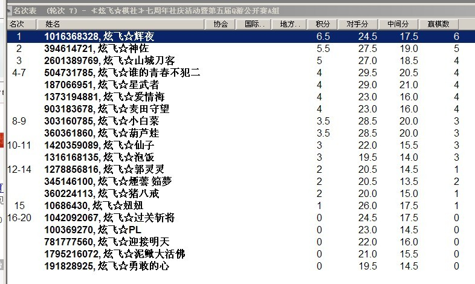
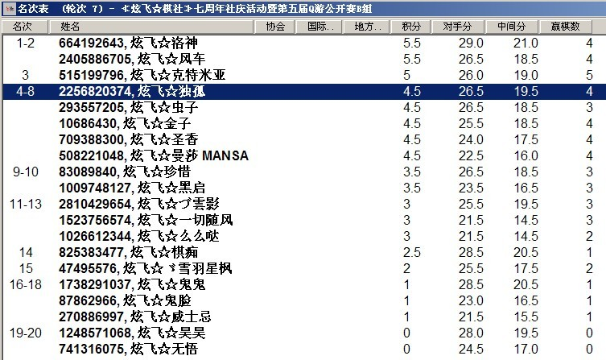

≮炫飞☆棋社≯7轮后总积分排名情况
首页
≮炫飞☆棋社≯
#1 ≮炫飞☆棋社≯7轮后总积分排名情况 作者：None 发表时间：2013-7-27 22:52:44


你们的竞猜里都有他们吗？
恭喜A组前4名和B组前4名进入决赛，决赛将于明晚8点正式开始。敬请期待。。。。
［此帖子已被 在 2013-7-27 22:57:59 编辑过］
#2 Re:≮炫飞☆棋社≯7轮后总积分排名情况 作者：草儿要出头 发表时间：2013-7-27 22:59:52
看来我还是黑马！都不投我！
#3 Re:≮炫飞☆棋社≯7轮后总积分排名情况 作者：鱼岛岛主 发表时间：2013-7-27 23:03:47
后三轮要的是真本事，能晋级的都是高手。我猜的三个人虫子前面可能状态不好积分太靠后，
最后冲刺也没能进前四可惜，辉夜跟风车为了我的威望继续加油。星武者四连胜紧接着三连败什么情况？
#4 Re:≮炫飞☆棋社≯7轮后总积分排名情况 作者：鱼岛岛主 发表时间：2013-7-27 23:14:57
A1-B4 A2-B3 A3-B2 A4-B1的话 预测辉夜 神佐胜 洛神 风车胜
#5 Re:≮炫飞☆棋社≯7轮后总积分排名情况 作者：超级天逸超人 发表时间：2013-7-27 23:19:28
A1-B4 A2-B3 A3-B2 A4-B1的话 预测辉夜 神佐胜 洛神 风车胜
#6 Re:≮炫飞☆棋社≯7轮后总积分排名情况 作者：None 发表时间：2013-7-27 23:27:21
哎呀，要是大循环呢
#7 Re:≮炫飞☆棋社≯7轮后总积分排名情况 作者：超级天逸超人 发表时间：2013-7-27 23:43:04
那样可以分出个高下，成绩也比较客观。。。但是太累了吧。。。。。。。7盘啊！